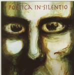

| Artist: | Poetica In Silentio |
| Title: | Poetica In Silentio |
| Label: | self produced |
| Length(s): | 59 minutes |
| Year(s) of release: | 1996 |
| Month of review: | 06/2000 |
| 1) | Heaven's Closed | 5.41 |
| 2) | To The Witch In The Hurst | 6.06 |
| 3) | Sailor | 1.56 |
| 4) | The Bee | 3.30 |
| 5) | Morning Mist | 5.34 |
| 6) | While You Were Looking | 4.14 |
| 7) | Two Gnomes | 4.29 |
| 8) | Camouflage | 8.50 |
| 9) | L'organe D'haine | 5.29 |
| 10) | De Dood | 2.21 |
| 18) | Stop Laughin' | 10.24 |